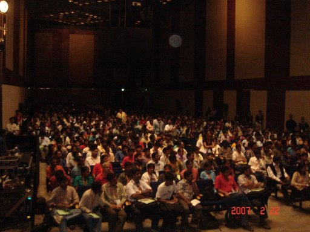
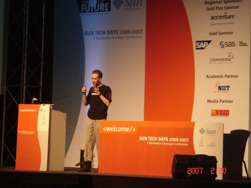
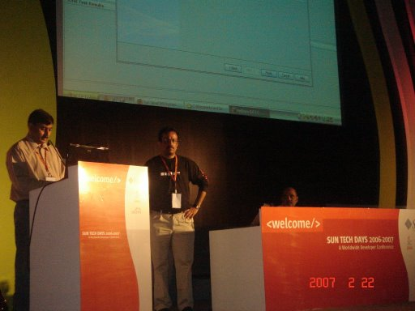
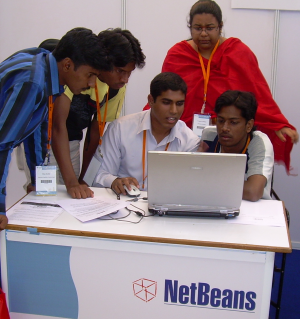

NetBeans Day Hyderabad: Standing Room Only
What was the most sought after item at NetBeans Day Hyderabad? Judging
from the turnout, a good guess might be: a vacant seat.
Empty
chairs were hard to come by on February 23 when over 900
attendees gathered inside one of the halls of Indiaís largest
convention center for a chance to listen to presentations from NetBeans
experts and partners and to connect with other users.
NetBeans
Evangelist Ashwin Rao started the day with an opening address
in which he thanked the diverse crowd of developers and students for
their impressive turnout and for helping to give NetBeans the clout it
enjoys today with millions of downloads and a vibrant community of
users. He also acknowledged the impact of the more than 130 partners
that presently make up the
NetBeans Partner Program, a program that recognizes companies and
individuals that add value to NetBeans through module building, code
contribution and endorsements. Before Rao stepped aside for the dayís
first presentation, the audience received a quick overview of
developments within NetBeans and what to expect in the coming months.
Their
appetites already whetted, veteran users and the
uninitiated listened attentively as NetBeans writer and popular blogger
Geertjan Wielenga turned
the focus onto the NetBeans editor in theìOn the Move with NetBeansî.
To give the
audience a better idea about improvements to look forward to in the new
editor of NetBeans 6.0ófor example, stop-and-replay on run, smart code
completion, and moreóWielenga gave his demo from two computers, one
displaying the 5.5 editor and the other the 6.0 editor. He later gave a
second presentation that day about the NetBeans Platform:
ìPorting a Java Application to the NetBeans Platform", in which he
moved a simple JMF client to a TopComponent, installed it into the IDE,
and then into the NetBeans Platform.
Unlike
airline travelers, why should developers not have a fear of
packing? There are no weight restrictions if they ìpackî with NetBeans!
Fortunately for the audience, it never got to hear this bad
joke,
instead it heard and saw something better: Raoís ìUnpack Your
Favorite Featureî presentation, an overview of the
Enterprise pack, the Profiler pack and the Visual Web pack, and the
ways that each can enhance a developerís productivity. Attendees
were also treated to presentations by NetBeans partners YASU Tech and
InfoSys. InfoSys engineer, Dr. Kumar, along with Sun developers Prakash
Narayan and PCM Reddy, co-presented on ìDid You Get Your Tools with
That?î, a Java EE tools demonstration. Afterwards, Kumar announced, to
the audienceís delight, that his teamsís developers use NetBeans
frequently
for their development projects, citing that the
IDEís tool set allowed them to develop scalable and robust applications
and that it improved developer productivity.
In classic NetBeans Day fashion, presenters
were
swamped
with questions
and comments from attendees during scheduled Q&A segments after
individual presentations and during breaks in the dayís program.
Wielenga, for example, fielded inquiries about the NetBeans IDE and
platform as waiting users typed their questions on his laptop for him
to
review and respond to later.
Overall, NetBeans Day Hyderabad was another worldTour success with fans
learning first-hand about the latest and upcoming enhancements to their
IDE of choice, NetBeans experts receiving invaluable feedback about the
product, and converts getting an introduction to the vibrant community
that is NetBeans.
To those planning to attend upcoming NetBeans worldTour events: reserve
early AND show up early--the seats really do fill up quickly!
Read More about NetBeans Day & Sun Tech Days Hyderabad
Press:
ìWhere
Java means Jai Hindî (Newspaper: The
Hindu)
Blogs:
NetBeans
Day Hyderabad: Standing Room Only (Geetjan Wielenga)
Success at Sun Tech Days (Sathish Vaidyanathan)
Sun
Tech Days, Hyderabad 2007 (Madhu K.)
Sun
Tech Days, Hyderabad 2007 (Sravan Kumar Sarraju)
Sun
Tech Days 2007, Hyderabad (Adi)